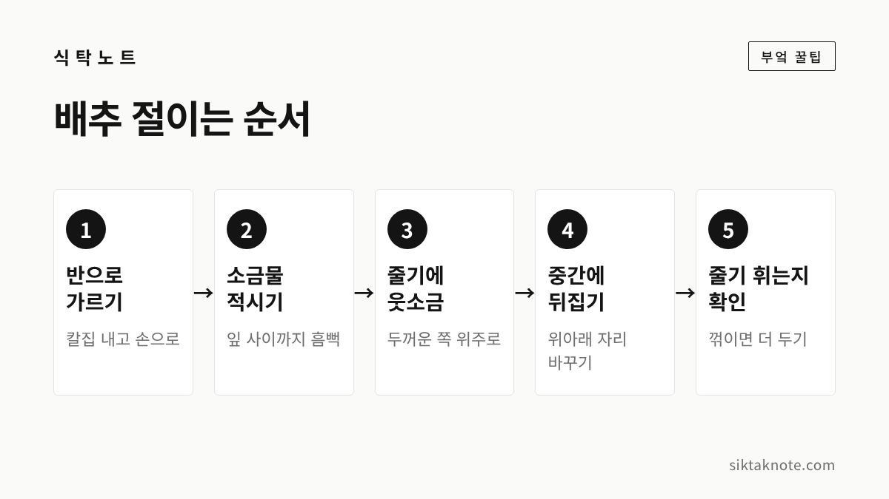
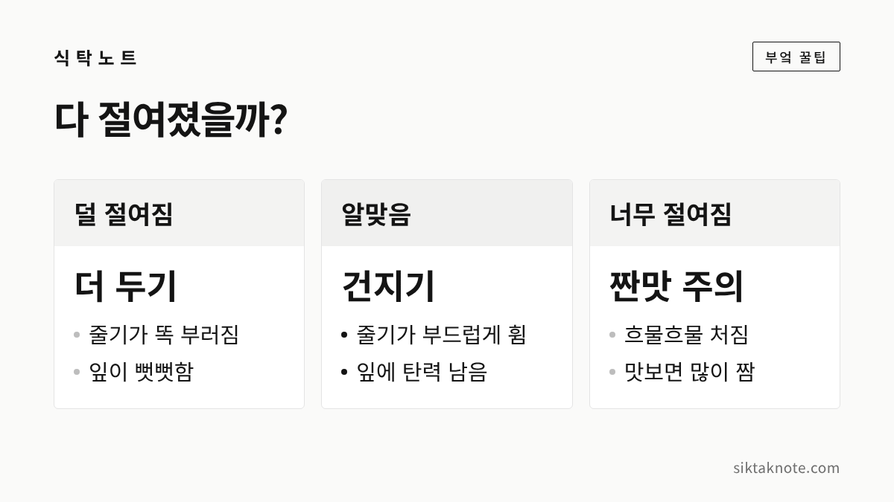

김장 배추 절이는 법 — 소금물 농도와 절이는 시간, 잘 절여졌는지 확인하기

3줄 요약
- 배추는 속이 80% 정도 찬 것을 골라 반이나 4등분으로 가르고, 소금물에 적신 뒤 두꺼운 줄기 쪽에 웃소금을 뿌려요.
- 절이는 시간은 소금물 농도와 날씨에 따라 크게 달라서, 시간보다 줄기가 꺾이지 않고 휘는지로 판단하는 게 좋습니다.
- 절임배추는 받은 날 바로 쓰는 게 좋고, 헹굴 때는 3번을 넘기지 않는 게 좋다고 식약처가 안내했습니다.
김장에서 가장 손이 많이 가고 마음도 쓰이는 일이 배추 절이기인데요. 배추가 덜 절여지면 김치가 뻣뻣하고 물이 많이 생기고, 너무 절여지면 짜고 질겨집니다. 양념이 아무리 좋아도 절이기가 어긋나면 맛을 되돌리기 어렵거든요. 올해 김장을 앞두고 배추 절이는 순서를 하나씩 짚어 보겠습니다.
배추는 속이 80% 정도 찬 것으로
배추를 고를 때는 들어 봤을 때 묵직하고, 겉잎이 싱싱하며 밑동이 단단한 것이 좋습니다. 레이디경향이 농촌진흥청 자료를 인용해 소개한 바에 따르면, 김장용으로는 속이 80% 정도 찬 "중간 결구" 상태가 가장 알맞고, 속이 너무 꽉 찬 배추는 소금이 고르게 배지 않을 수 있다고 합니다. 한 포기 무게는 3~3.5kg 정도가 좋다고 했어요.
줄기에 깨처럼 까만 점이 박힌 배추를 보면 망설여지실 텐데요. 같은 보도에 따르면 이 점은 병이 아니라 질소 비료와 관련된 생리적인 변화라서 먹어도 몸에 해롭지 않다고 합니다. 다만 점이 아주 많으면 식감이 조금 무를 수 있다고 하니, 고를 수 있다면 깨끗한 배추를 고르시는 게 좋겠습니다.

반이나 4등분으로 가르는 법
배추는 밑동 쪽에 칼집을 낸 뒤 손으로 벌려 쪼개는 게 좋습니다. 칼로 끝까지 자르면 속잎이 잘려 나가 부스러기가 많이 생기거든요.
- 누렇게 시들었거나 상한 겉잎을 몇 장 떼어 냅니다. 떼어 낸 겉잎 중 깨끗한 건 우거지로 쓰셔도 됩니다.
- 밑동에 칼을 넣어 3분의 1쯤 칼집을 내요.
- 양손으로 벌려 반으로 쪼갭니다.
- 큰 배추는 같은 방법으로 한 번 더 나눠 4등분합니다.
- 밑동에 다시 칼집을 살짝 내 두면 두꺼운 아랫부분까지 소금이 잘 뱁니다.
밑동은 잎이 흩어지지 않게 붙잡아 주는 부분이라 잘라 내지 말고 그대로 두세요. 양념까지 다 바른 뒤에 정리하면 됩니다.

소금물 농도는 자료마다 달라요
소금물을 얼마나 진하게 타야 하는지가 늘 궁금하실 텐데요. 이번에 농촌진흥청이나 식약처 같은 공공기관이 집에서 쓸 소금물 농도를 숫자로 안내한 자료는 찾지 못했습니다. 보도된 안내도 이렇게 차이가 납니다.
| 출처 | 소금물 | 절이는 시간 |
|---|---|---|
| 서울시 뉴스룸(2010), 김치 명인 강순의 선생 | 물과 소금 5:1 | 저녁부터 아침까지 10~11시간 |
| 미시간코리안위클리(2014), 대학병원 영양 전문가 | 염도 8~10% | 12℃에서 18~20시간 |
보시다시피 소금물이 진하면 시간이 짧아지고, 묽으면 길어집니다. 날이 춥거나 배추가 크면 더 오래 걸리고요. 그래서 어느 한 숫자를 꼭 맞추기보다, 자주 쓰시는 방법 하나를 정해 두고 아래에 나오는 줄기 확인법으로 건질 때를 정하시는 게 마음 편합니다. 소금은 김장용으로 많이 쓰는 굵은 천일염을 쓰는 경우가 많습니다.

소금물에 적시고, 줄기에 웃소금

- 큰 통에 소금물을 풀고, 가른 배추를 한 쪽씩 담가 잎 사이사이까지 흠뻑 적십니다.
- 건져서 자른 면이 위로 오게 놓아요.
- 잎을 한 장씩 들추며 두꺼운 흰 줄기 쪽에 굵은소금을 한 줌씩 뿌립니다. 이걸 웃소금이라고 하는데요.
- 초록 잎 쪽은 얇아서 금방 절여지니 소금을 거의 뿌리지 않아도 됩니다.
- 통에 자른 면이 위로 오게 차곡차곡 쌓고, 남은 소금물을 부어 줍니다.
줄기와 잎이 절여지는 속도가 다르기 때문에 웃소금을 줄기에만 몰아 주는 겁니다. 잎까지 소금을 듬뿍 뿌리면 줄기가 다 절여질 무렵 잎이 너무 짜집니다.

중간에 한 번 이상 뒤집어 주세요
통에 쌓아 두면 아래쪽 배추는 소금물에 푹 잠기고, 위쪽은 덜 잠기죠. 그래서 절이는 중간에 위아래 자리를 바꿔 주는 게 좋습니다. 앞에서 소개한 2014년 보도에서는 2~3시간마다 위와 아래를 바꿔 주라고 안내했어요. 밤새 절이신다면 자기 전에 한 번, 아침에 일어나서 한 번 살펴보시면 됩니다.
뒤집을 때 배추가 많이 숨이 죽었는지, 아직 빳빳한지를 같이 보시면 건질 때를 가늠하기 좋습니다. 절이는 곳은 햇볕이 들지 않는 서늘한 곳이 좋겠습니다.
줄기가 휘면 다 절여진 거예요

배추가 다 절여졌는지는 시간보다 손으로 확인하는 게 정확합니다. 가장 두꺼운 흰 줄기 부분을 살짝 구부려 보세요.
- 똑 하고 부러지면 아직 덜 절여진 겁니다. 조금 더 두세요.
- 꺾이지 않고 부드럽게 휘면서 잎에 탄력이 남아 있으면 알맞게 절여진 겁니다.
- 흐물흐물 늘어지고 줄기를 조금 떼어 먹어 봤을 때 많이 짜면 너무 절여진 거예요.
배추마다 크기가 달라서 같은 통 안에서도 빨리 절여지는 쪽이 있습니다. 다 된 것부터 먼저 건져 내시면 됩니다. 너무 짜게 절여졌다면 헹굴 때 물에 조금 더 담가 두어 간을 빼 주세요.
헹구고 물 빼기
절인 배추는 깨끗한 물에 여러 번 헹궈 소금기와 이물질을 씻어 냅니다. 서울시 뉴스룸에 소개된 강순의 선생은 4~5번, 2014년 보도에서는 3~4번 헹구라고 안내했어요. 잎 사이에 낀 소금 알갱이와 흙을 흔들어 씻어 내는 게 중요합니다.
헹군 배추는 자른 면이 아래로 가게 소쿠리나 채반에 엎어 두고 물을 뺍니다. 손으로 꽉 짜면 배추가 상하니 그대로 두어 자연스럽게 빠지게 하세요. 2014년 보도에서는 30분에서 1시간 정도 물기를 빼라고 했는데요. 물이 덜 빠지면 김치에 물이 많이 생기고 양념이 싱거워지니, 양념 버무리기 전에 충분히 빼 두시는 게 좋겠습니다.
절임배추를 사서 쓸 때
요즘은 절임배추를 사서 김장하는 집이 많은데요. 식품의약품안전처는 절임배추를 받은 당일에 바로 쓰는 게 가장 좋다고 안내했습니다(2019년 국민일보 쿠키뉴스 보도). 상온에 하루 이상 두면 대장균군이 늘어날 수 있으니, 그런 경우에는 물에 헹군 뒤 쓰라고 했어요.
헹구는 횟수는 3번을 넘기지 않는 게 좋다고 합니다. 식약처 실험에서 3번 정도 헹구면 헹구지 않은 것보다 총 세균 수가 95%, 대장균군이 93% 줄었다고 보도되었는데요. 너무 여러 번 씻으면 배추가 물러질 수 있다고 합니다.
- 받자마자 상자를 열어 냄새를 맡아 보세요. 한국소비자원은 배송이 오래 걸렸거나 악취가 나면 쓰지 말라고 조언했습니다(2018년 YTN 보도).
- 받는 날을 김장하는 날에 맞춰 주문하시는 게 좋습니다.
- 받아서 바로 못 쓴다면 서늘한 곳에 두고, 되도록 빨리 쓰세요.
김장이 끝나면 김치는 공기와 덜 닿게 꾹꾹 눌러 담아 두시는 게 좋겠습니다. 오래 두다 군내가 날 때는 김치 군내 잡는 법을 참고하시고, 양념에 들어갈 고춧가루 보관법과 남은 배추를 두는 배추 보관법도 함께 봐 두시면 좋겠습니다.